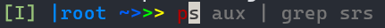

什么是 shell
操作系统和系统调用
shell（外壳，但是一般没人用中文称呼它）这个名字来源于与操作系统内核(kernel)相对的概念。因此为了理解什么是 shell，首先有必要对操作系统有一个最基本的理解。但是不用紧张，这里涉及的操作系统知识对于完全不了解操作系统的人也是毫无压力的。
操作系统简介
操作系统是计算机中最重要的一个软件，它是应用程序和计算机硬件之间的桥梁。简单来说操作系统主要实现两件事：
- 管理计算机上的硬件资源，包括内存（也有人叫主存），cpu，网卡，磁盘等。计算机上的硬件资源总是有限的，例如你的电脑内存可能有8G或者16G或者更多（如果你是MC玩家的话，你的内存可能会非常大），但是它也总是有限的。另外计算机的人们为了安全，希望软件对硬件的使用是尽量隔离的。因此如何能让所有的应用程序公平地，合理地使用计算机上有限的硬件资源是操作系统的责任。
- 为应用程序提供服务。从某种角度上讲，这一条和上一条是同一个问题的两个方面。为了管理计算机上的硬件资源，计算机会利用硬件的机制限制程序对硬件资源的使用，因此对于一个普通的应用程序，可以做的事情只有计算（使用CPU）和访存（使用内存）。那么对于普通的应用程序，计算机上的其他硬件资源都不能使用吗？如果这样的话，那应用程序几乎什么也干不了，即使将运行结果输出在屏幕上都做不到。这时就需要操作系统了，每当程序需要使用其他硬件资源的时候都需要向操作系统请求服务，操作系统来替这些程序完成任务，这也就让所有那些不合理的请求都被操作系统拦截了。另一方面，系统调用也可以简化应用程序对硬件的使用。应用程序请求服务的方式，就是通过下面要讲的系统调用。
操作系统内核
操作系统内核简单来讲就是操作系统中最核心的功能，包括内存管理，中断处理，文件系统等。处理系统调用就是操作系统的内核的工作之一。
系统调用
那么系统调用究竟是什么呢？系统调用实际上就是一个类似函数调用的东西。例如一个应用程序想要向一个文件中写入一些数据，本质上就是向磁盘上写入数据。作为普通的应用程序，它是不能直接操作磁盘的（而且直接操作磁盘十分繁琐）。那么它就需要使用操作系统提供的系统调用。一般来说系统调用在不同的操作系统中是不同的，这里我就用linux的系统调用来举例：
#include <fcntl.h>
#include <unistd.h>
int main()
{
int fd = open("test.txt", O_WRONLY);
char buf[20] = "Hello world!";
write(fd, buf, 12);
}
这段C代码就展示了如何使用系统调用向文件中写入数据，其中 open和 write都是linux提供的系统调用。代码 main函数的第一行使用 open打开了当前目录下的 test.txt文件，并且打开的方式是只读的(O_WRONLY表示只读)，这个系统调用的返回值是一个整数，是操作系统给这文件的一个 id（叫做文件描述符），之后的系统调用中都使用这个 id来代指这个文件（这里说的其实很不严谨，更准确的信息请去学习ICS和OS课程）。第二行准备了一些数据，第三行使用 write系统调用向我们打开的文件中写入 buf数组的头12个字节。
从这段代码来看，系统调用用起来和普通函数几乎没有区别。
但是系统调用和函数调用有本质区别的，区别就在于，系统调用实际上是"唤醒"（用专业术语来讲是陷入(trap)）了操作系统的内核。也就是应用程序通过系统调用告诉操作系统，我现在需要你的服务，这时操作系统就会接手程序的运行，服务你的请求。这个过程中，操作系统对硬件拥有了完全的控制权，同时应用程序为了实现正常需求的过程也被简化了。
最后这一节做一个简单的总结：操作系统内核负责管理硬件并且为应用程序提供服务，应用程序使用系统调用来请求操作系统的服务。
什么是 shell
上面说了这么多，这一切和 shell又是什么关系呢？实际上 shell是一种软件，它将操作系统提供的服务提供给用户.
上面我们提到了，操作系统通过系统调用来给应用程序提供服务。系统调用看上去就像函数调用一样，对于应用程序来很方便，但是对于人类来说，我们很难直接使用系统调用。如果我们每次要使用操作系统来完成一些操作都需要编写一段 C程序，这也太麻烦了。因此 shell提供了一种对于人类来说比较易用的"程序语言"，shell做的事本质上就是将这种语言翻译成一系列系统调用。这种所谓"编程语言"就是 shell命令。
对于大部分现代操作系统来说，它们都提供了图形界面可以完成各种操作，但是在图形界面出现之前，人们操纵操作系统的唯一途径就是通过 shell。现在在一些场景下，shell也有它独特的优势，例如在服务器上，shell不需要渲染图形，当我们使用 shell远程操作服务器的时候可以减少服务器和网络上的负担。另外，熟练地使用 shell命令来完成任务通常会比图形界面快得多。（这也是这个文档的主要目的之一）
如何使用 shell
对于我们来说使用 shell的方式主要有两种：
shell可以使用交互式命令行界面，在这里输入指令，并按回车，shell就会执行我们输入的命令。下图就是一个fish(friendly interative shell，一种shell)的交互式命令行界面的样子。（实际上你们可能注意到，我并没有使用默认的界面，~~并夹带了一些私货~~，这些修改的方式我在后面都会讲到）。可以发现，这个交互式界面有一个特点，每一行的开头都会有一些固定的信息和>>>这样的字符，这些被称为命令行提示符(prompt)，它们提示了命令行的开始，也就是从这些字符开始，后面就将是用户的输入。为了简单，之后这个文档中出现的shell命令都将省略命令行提示符。

- 使用交互式命令行界面虽然方便，但是也存在一些缺陷，比如，如果我们需要一次执行大量的语句，或者我们有一些复杂的分支，循环等逻辑，使用交互式界面将会很不方便。因此
shell通常也提供给我们了另一种使用方式——脚本。脚本就像是用shell命令这种"编程语言"写成的程序，但是相比于C语言程序，它的执行方式更像是python语言程序，也就是说，shell脚本是读一句执行一句的，没有提前的编译过程。
上面我们也提到了，shell是一种软件，因此实际上我们在不同的操作系统中通常都分别有多种 shell可以选，但是显然这里我们只介绍linux中的 shell。同一种操作系统中的不同 shell通常也很相近，因此之后我的介绍只使用 bash这一种最常用的 shell。其他的 shell使用方式基本相同。
最后我再推荐一个 shell，就是 fish，它在交互式界面上的操作和 bash几乎没有区别，因此这个文档后面的操作除非特殊说明，否则使用 fish也可以进行。除此之外，fish最大的一个好处就是它可以预测你的输入，如果你想要输入的内容和它的预测相同，那么简单地按一下$\rightarrow$就可以将它的预测输入了。另外，fish有好看的语法高亮，这些你可以自己在学完后面的一些基本指令之后自己探索一下，我也会在这个文档中再介绍一些 fish好用的特性。下图中红色的文字是我的输入，灰色的文字是 fish的预测。

尝试写第一个 bash命令
前面说了这么多理论，现在终于到了实际操作的时间了。虽然我猜读者中或许有一些同学已经用过一点点命令行命令了，但是为了那些从零开始的人也能毫无困难地开始，在这之前我还要再讲一个小问题。
什么是终端(terminal)
很多最早接触 shell的人都很容易将终端和 shell混为一谈，我接触过很多 shell初学者，他们问的最多的问题也是：终端和 shell是什么关系？因此这里很有必要简单讲解一下这个问题。
首先，我们前面讲到过了 shell是一种用来让我们操纵操作系统的软件，并且我们也讲了 shell的两种使用方法，但是我们还有这样的一个疑问，shell的交互式界面又是在哪里打开的呢？答案很简单：终端。
通常情况下，我们认为终端是一种软件，这个软件就是一个黑色(或者别的什么颜色)的窗口，里面就是 shell的交互式界面。换句话说，这个软件的功能很简单，它可以接受某种指令，然后在自己的界面上显示各种文字。至于显示什么文字，这就是 shell要决定的事了。一些现代化的终端软件也有打开多个窗口，调整字体大小颜色等功能。
对于一些十分古老的计算机，在这些计算机上，没有图形化的界面，
shell就是直接显示在屏幕上的，我们可以认为计算机的屏幕就是终端。甚至更古老的计算机，它们连屏幕都没有，那时候的程序计算机交互的方式打孔纸带（输入）和打字机（输出）。后面我们会看到在linux系统中一些东西的名称就是"打字机时代"遗留下来的
怎样使用终端
- Windows系统：因为文档主要是如何使用linux shell，因此Windows用户首先需要准备一个linux环境，主要的方式有两种：安装WSL2(推荐，需要Windows10或以上)，或者安装虚拟机，具体的步骤可以在附录A和附录B中找到。如果你选择了使用WSL2，那么你就可以安装Windows terminal(推荐，安装和使用方式也在安装WSL2的附录中)，或者你也可以使用Windows自带的终端。如果你选择了安装虚拟机，那么在打开虚拟机之后很容易在系统中找到自带的终端软件。
- Mac系统：Mac系统自带终端，通常情况下默认的
shell是zsh，它和bash的差别也不会很大，但是我不能保证文档后面的操作在zsh上都能成功。如果你希望使用bash的话也很容易，只要安装了bash之后在终端中输入bash并且按回车就可以了。 - Linux系统：Linux系统通常都会自带终端，只要打开系统自带的终端就可以了。（但是如果你日常使用的机器是Linux系统，我猜你也完全不需要看这个文档了）
这里再额外多说一句，终端和 shell是独立的两个软件，在一个机器上可以多种终端和多种 shell，在同一个终端中可以打开多种 shell，也可以在不同终端中打开同一个 shell。下图中展示的是我在Windows terminal中打开我的电脑的WSL2的 fish(这是我的WSL2的默认 shell)，然后切换到 bash。实际上，bash是在 fish中用命令打开的一个软件。这也体现出 shell作为一种软件和其他软件并没有太大区别。另外我们也可以看到，两个 shell的prompt风格完全不同。

在Linux系统（包括虚拟机）以及WSL2（其实也是一种虚拟机）下，默认的 shell通常都是 bash，因此当你打开终端的时候，就会打开 bash，你的屏幕上应该会打印一个prompt，类似于:
user@host: PWD#
其中 user位置上的是你的用户名，host位置上的是你的主机名(你不知道这个是什么的话没关系，忽略它)，PWD位置上的是你的当前工作目录（这个后面会讲到），#则提示你后面开始是你的输入。从现在开始，在这里输入的每个字符（直到回车）都是你输入给 bash的命令。
第一个 bash命令
做了这么多准备工作，我们现在终于可以开始我们的第一个 bash命令了。
echo "Hello world!" > test.txt
这个命令的作用和上面那段C代码差不多，但看上去简单多了，对吗？
其实玄机都藏在 echo和 >里面。echo本身是一个软件，它的基本功能是将后面那串字符打印到屏幕上。你可以试试把 > test.txt去掉看看会发生什么。后面的 >的作用是输出重定向，后面会讲到，这里它的作用就是将前面的应该打印到屏幕上的东西写到文件中。
小结
在这一章里，我们认识到，shell并不神秘，它不过是一个普通的应用程序。但是它的功能却很重要，它连接了我们人类与操作系统。最后我们写成了我们的第一个 bash命令，并且从这个例子当中我们可以发现，shell的功能其实也并不复杂，它的主要功能是靠命令来运行其他软件实现的（例子中的 echo），还有一些功能是依靠 >这样的 shell语法(有的人可能认为这样的说法不严谨)实现的。因此这个文档后面的部分将会主要进行三个方面的讲解：
linux系统中那些常用的命令行软件（通常简称为cli程序，cli是command line interface的缩写）和一些shell内置的命令（这些内置命令用起来像其他软件一样），他们可以让我们实现一些基础的功能。这些软件实际上并不是shell的一部分，但是由于使用shell完全不能离开它们，所以我们会在这个文档中介绍它们。一些过于复杂的软件可能不会做介绍，介绍它们不是这文档的目的，并且其他的一些文档会介绍得更详细。bash语法，例如例子中的>，它们可以让我们用shell实现更加复杂的功能。shell中的一些核心概念，例如上面提到的"当前工作目录"，这些概念是使用shell必须了解的。